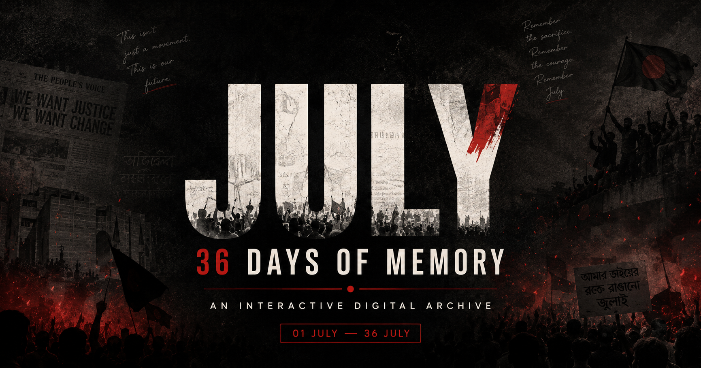

কোটা সংস্কারের দাবিতে শুরু হওয়া একটি সাধারণ ছাত্র আন্দোলন কীভাবে একটি গণ-অভ্যুত্থানে রূপ নিয়েছিল, তা বাংলাদেশের ইতিহাসে এক অবিস্মরণীয় অধ্যায়। ১ জুলাই থেকে শুরু হওয়া এই আন্দোলন সাধারণ ছাত্রদের অধিকার আদায়ের গণ্ডি পেরিয়ে রূপ নেয় এক স্বৈরাচার-বিরোধী তীব্র গণ-আন্দোলনে। বুলেটের সামনে বুক পেতে দেওয়া আবু সাঈদ থেকে শুরু করে মুগ্ধর সেই অমোঘ বাণী—'পানি লাগবে, পানি?'—সবকিছুই এই ৩৬ দিনের পাতায় পাতায় রক্তের অক্ষরে লেখা। ৫ই আগস্ট, যাকে ছাত্র-জনতা '৩৬ জুলাই' বলে অভিহিত করেছে, সেদিন পতন ঘটে স্বৈরাচারের। নিচে সেই ৩৬ দিনের প্রতিটি রক্তক্ষরা মুহূর্তের পথরেখা দেওয়া হলো।